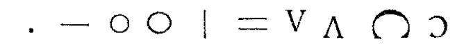

Беседа 1776 от 3877 · Беинса Дуно
Петък и събота
Т.м.
Чете се темата: „Качества на числата”.
За следния път всеки да пише върху свободна тема.
Сега ще ви дам един ребус, който съществува в Природата. Опитайте се от тия знаци да решите ребуса.

И тъй, приятелят ви, от когото искате 1500 лв. на заем, ви праща само 15 лв. и казва: Тия пари ще ги умножиш на 10; после ще извадиш 2 и полученото ще умножиш на 20. Значи (15 х 10 – 2) х 20.
Друга задача: 13 х 20 + 4 = Х. Като изпраща парите, приятелят ви казва: Ще потопите числото 15 в чаша вода десет пъти. След това ще извадите от него числото 2 и ще го умножите на 20. Втората задача: ще вземете числото 13, ще го умножите на 20, т.е. ще го потопите 20 пъти във вода, взета от четири извора. Като решите и тази задача, ще получите една неизвестна сума, с която ще прекарате цяла година. Тази задача може да се реши в кабалата, но след дълго време. Тя не може да се реши набързо. Важното е, че е разрешима. Ако работите върху тази задача пет години, ще я решите и тогава ще имате средства не за една година, но за цели 15 години.
Представете си, че приятелят ви праща 12 доброкачествени житни зрънца, а не 15 лв. Като ги посадите, още първата година всяко зрънце ще даде клас от 60 зрънца. Значи 12 х 60 = 900 зрънца; втората година ще дадат 900 х 60 = 54000; третата година – 54000 х 60 = 3240000 и четвъртата година – 194 400000.
Какво ще направиш, ако твоят приятел вместо 1500 лв. ти изпрати 15 породисти кокошки? Едното яйце на тия кокошки струва по 150 лв., а всяка кокошка снася редовно всеки ден по едно яйце. Това са живи числа, които работят в природата. Не е ли по-добре да имате 15 породисти кокошки, отколкото 1 500 лв.? Яйцата на тия кокошки са лечебни. Ако болен яде от тях, непременно ще оздравее. Затова те струват скъпо, по 150 лв. едно яйце. Ако слаб човек яде от тия яйца, укрепва, силен става. Който не разбира законите на Природата, лесно се обезсърчава. Бедният се отчайва от живота, но влезе ли в ума му една свята идея като яйцата на породистата кокошка, тя ще внесе живот в него, ще го подкрепи.
Един човек се оплаквал, че не му върви в живота. Тръгнал по света да търси щастието си. След дълго лутане срещнал един дервиш и го запитал: Кажи ми кой е най-щастливият ден и кой – най-нещастният? Искам да зная кога да работя и кога да не работя. Дервишът му казал: Най-щастлив ден е петък, а най-нещастен – събота. Ако започнеш работа в петък, ще успееш; ако започнеш в събота, няма да успееш. Обаче за това, което ти казах, ще ми дадеш всичките си пари. – Имам само две хиляди лева. – Колкото имаш, ще ми дадеш, а ти ще започнеш да прилагаш това, което научи от мене, и ще печелиш. Пътникът дал последните си две хиляди лева и се готвел да тръгне, но дервишът го спрял и му казал: Ще ти дам един съвет. Преди да почнеш една работа, помисли два пъти за добро ли е, или за зло. Пътникът благодарил на дервиша и продължил пътя си, дълбоко замислен върху новата задача.
Питате: Станал ли е богат този човек? Намерил ли е той щастието? – Намерил го е. Щом е бил готов да даде и последната си пара, непременно е намерил щастието. След 20-годишно странствуване той се върнал у дома си без пари, но научил поне кой ден през седмицата е щастлив и кой – нещастен. Като влязъл в двора, погледнал през прозореца да му отвори някой, но видял, че жена му прегръща и целува един млад, 20-годишен момък. Той се спрял за момент да помисли какво да прави и си казал: Ако не бях срещнал дервиша, веднага щях да извадя револвера си, да убия и жена си, и момъка. Сега, понеже имам добър съвет, даден от дервиша, ще го приложа: преди да действувам, два пъти ще помисля за добро ли е, или за зло. Вслушал се в разговора и разбрал, че това е неговият син, пораснал в отсъствието на баща си. Питам: На място ли е дал той двете хиляди на дервиша? – На място. С тия пари той научил кой е щастливият ден. Тоя ден бил петък.
Помни: Всяко нещо в живота има своя добра страна. Сегашните хора се намират в положението на пътника, който тръгнал да търси щастието. Те са вече при дервиша. Той ще им каже, че има един щастлив и един нещастен ден. Той ще ги посъветва как да започват всяка работа. Ако хората не са готови да дадат на дервиша всичко, каквото имат в джоба си, те никога няма да намерят щастието. И Природата постъпва по същия начин. Като отидеш при нея да искаш нещо, тя първо ще те обере, ще ти вземе всичко, на което разчиташ; след това ще ти даде нужното. Ще дадеш всичко, каквото имаш, но ще научиш най-важното: кой е най-щастливият и най-нещастният ден. Най-щастливият ден ще ти донесе много по-голямо богатство от това, което си дал. Най-нещастният ден ще ти вземе и най-голямото богатство. И милиони да имаш, ще ти ги вземе.
Кой е най-щастливият ден? – Петък. Вървиш край реката замислен, търсиш път да излезеш от трудното материално положение, в което си попаднал. Нямаш пет пари в джоба си. Виждаш, че някой се дави в реката. Кой се дави, не знаеш. Обаче нищо не ти струва да се спуснеш във водата и да извадиш давещия се. Оказва се, че това е царската дъщеря, която се къпала в реката, но по невнимание се подхлъзнала и започнала да се дави. Тоя ден е петък – най-щастливият ден за тебе. От този ден ти ставаш и богат, и щастлив. Лесно се нареждат работите на човека, ако може да спаси царската дъщеря от удавяне. Не струва ли да спасиш царската дъщеря? Не струва ли да дадеш последните си пари, за да намериш щастието?
Пази се от онова, което опива. Ако кръчмарят те вика в кръчмата си, бъди буден, мисли защо ще отидеш. Той казва: Драгане, ела в кръчмата ми да те почерпя. Имам старо, 20-годишно вино, да го опиташ. Той ще те почерпи само една чаша, а останалото ти ще плащаш. Като харесаш виното, ще започнеш да вдигаш чашите една след друга, докато се опиеш. Колкото и да пиеш, кръчмарят не губи; той е буден, трезв, всичко пише в тефтера си. Истински кръчмар е оня, който всякога е трезв. Той знае свойството на виното. Докато е било гроздов сок, не е опасно; щом се задържи на едно място, в бъчвите, става опасно. Кръчмарят се обръща към Драган, а не към Иван. Какво може да направи Иван? – Може да отреже главата на човека, постник може да стане, но пияница никога не може да стане. – Защо? – Защото Иван е човек, в когото има нещо, което постоянно тече. Следователно, ако искаш да превърнеш гроздовия сок в опивателно средство, спри го на едно място, ограничи движението му. Щом нещо в тебе постоянно се движи и тече, ти няма да се опиеш. Чешмата опива ли хората? Обаче виното никога не може да стане чешма. От бъчвата тече вино, но тя не е чешма. Всичко можеш да направиш от виното, но никога не можеш да го направиш да тече като чешма.
Това е символ, който трябва да се преведе. Това е реална идея, а не механична. – Кои идеи са реални? – Които растат, развиват се и хранят човека. Реални неща са житото, царевицата, плодовете и др. – Кои неща са нереални? – Въображаемите, предполагаемите. Въобразяваш си, че някога ще станеш богат. – Има ли богати хора в света? – Няма. – Има ли бедни? – И бедни няма. Значи, реалността подразбира пълнотата на живота, а нереалността – празнотата.
Какво е отношението между пълнотата и празнотата? Кога се казва, че нещо е празно? Ако излеете водата от чашата, празна ли е тя? Чашата е пълна с въздух. Като извадите въздуха, тя е пълна със светлина. И светлината да извадите, чашата пак не е празна – в нея има живот. Никой не може да извади съдържанието, което природата е вложила в нещата. Учените работят със силите на Природата, впрягат ги на работа, но никога те не могат да отнемат елементите на тия сили от хората, да ги оставят празни. И да извадят нещо от тях, те трябва да превърнат материята и енергията на тия елементи в друго нещо. Нищо в Природата не се губи. Както материята и енергията претърпяват превръщане, така и мислите, желанията и постъпките на хората се променят. Имаш желание да си купиш хубави обувки и задоволяваш желанието си. Случи се нещо, че не можеш да носиш обувките, трябва да ходиш бос. В първо време се чувствуваш нещастен, но после казваш: Защо страдам? Ето, птиците, животните нямат обувки. Трябва ли да се сърдя за това? Навикнал съм с обувки, сега ще ходя без обувки. Така ме учи Природата.
И тъй, ако не може да постигне известно желание, човек се чувствува нещастен. Щом реализира желанието си, той става щастлив. Някога, след като е реализирал веднъж желанието си, човек иска втори път да го реализира. Това са навици. Природата има два метода, чрез които освобождава човека от навиците. Същевременно тя го предпазва от създаване на навици. Природата си служи с положителен и отрицателен метод, т.е. със знаковете плюс и минус. Един беден ученик от варненската гимназия, стипендиант, отишъл един ден в гостилницата на прочутия Шишко гостилничаря да се нахрани. Седнал да яде и понеже бил много гладен, поръчал си няколко яденета. Шишко го гледал как яде и си мислел: Навярно тоя синковец е получил пари от баща си, затова яде толкова много. Като се нахранил, ученикът станал от масата и се обърнал към гостилничаря с думите: Шишко, ще ме извиниш, не мога да ти платя, нямам пари. Днес бях много тъжен, затова реших да се нахраня добре. Шишко се ядосал и сърдито казал: Като си нямал пари, не можа ли да се задоволиш само с една чиния ядене? Ти изяде четири чинии ядене и не мислиш да плащаш. Аз съм щедър – за една чиния щях да те извиня, но за трите няма да ти простя. Набил го добре и с един ритник го изхвърлил от гостилницата си. Като видели това, съучениците му го запитали: Приятелю, защо те би Шишко? – Имам да му давам. Би ме, но ме и нахрани.
Казвам: Няма човек в света, който да не е опитал ритника на Природата. Това е отрицателният метод, с който тя си служи. Всеки човек е влизал в гостилницата на Природата, да се нахрани добре и нищо да не плати. Всеки човек е минал през някаква криза в живота. Той сам си създава кризите, а не Природата. Създадеш си една идея фикс, искаш да я реализираш, страдаш, мъчиш се.
Един 60-годишен човек се занимавал дълго време с идеята „perpetuum mobile”. Той ходил в Русия, но и там не могъл да я реализира. По едно време се яви и в нашето братство, но и тук не се задържа. Някои му казваха да остави идеята си, да се откаже от нея, понеже тя не е реализуема. Той не се съгласи на това. Съвършено обърка сметките си, но идеята си не даде. Идеята наистина не може да се разреши, но той се засегна от предложението на другите да вземат идеята му. Той разрешава своята идея в друг свят. Той е болен, лекува се, но като чуе „perpetuum mobile”, въодушевява се. Разбира от математика и геометрия. Там е приложил идеята си, но още нещо не му достига. Може да е микроскопическо, но щом го придобие, въпросът ще се реши.
Всеки човек си носи по една идея „perpetuum mobile”. Всеки човек си има и по една обикновена идея, която също не може да разреши. Като не може да я реши, той се занимава с последната задача на „perpetuum mobile”. Според мене човек има право да се занимава с тази идея само когато няма друга работа. Не е лошо и това, отлична идея е „perpetuum mobile”, но като дойдеш до нея, законите на Природата не й се подчиняват. Първо се занимавай с разрешимите идеи, после с „perpetuum mobile”. За да решиш тази идея, трябва да бъдеш маг, гений, велик мъдрец. Ако не си такъв, по-добре не я разрешавай. Нека тази идея остане неразрешена. Искаш или не искаш, все ще остане нещо неразрешено в живота.
– Само светлият път на Мъдростта води към Истината.
– В Истината е скрит животът.
23. Лекция от Учителя, държана на 18 март 1932 г. в София – Изгрев.
7.10 ч.с.